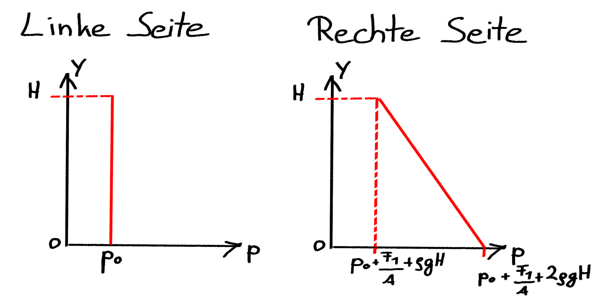

Berechnen Sie die auf den Würfel wirkende Auftriebskraft und dessen Dichte \(\rho_w\).
Berechnen der Auftriebskraft \(F_{Auftrieb}\) auf den Würfel.
Die Auftriebskraft entspricht der Gewichtskraft des verdrängten Volumens
Berechnen Sie den Betrag der resultierenden Druckkraft \(F_{p}\) auf die Klappe.
Berechnung über den Druck im Flächenschwerpunkt, multipliziert mit der Fläche der Klappe
\(F_{p} = p_G A = \frac{3}{2} \rho g {H}^2 b\)
Berechnen Sie das von der Druckkraft \(F_p\) erzeugte Moment um den Drehpunkt M.
Nun wirke die Kraft \(F_1 \neq 0\). Die Positionen der Kolben und des Würfels bleiben gleich.
Wie verändern sich die auf die Ober- und Unterseite des Würfels wirkenden Druckkräfte und die Auftriebskraft? - \(F_o\) und \(F_u\) erhöhen sich um den Betrag \(\frac{F_1}{A}\)
Skizzieren Sie den Druckverlauf über die linke und rechte Seite der Klappe und geben Sie die charakteristischen Werte an.
Berechnen Sie die Kraft \(F_2\) in Abhängigkeit von \(F_1\), damit das System im Ruhezustand ist.
Bestimmen Sie die Kraft \(F_1\), bei der sich die Klappe öffnet.
\(\left( \frac{F_1}{A}+\frac{3}{2} \rho gH \right) Hb \left( \frac{H}{2} + \frac{\rho g}{\left( \frac{F_1}{A}+\frac{3}{2} \rho gH \right) H b} \frac{1}{12} {H}^3 b \right) \overset{!}{=} M_{krit}\)
\(\left( \frac{F_1}{A}+\frac{3}{2} \rho gH \right) \frac{H^2 b}{2} + \frac{ \rho gH^3 b }{12}= M_{krit}\)
\(F_1=\frac{2A M_{krit}}{H^2 b}-\frac{5}{3}\rho gHA\)
Bestimmen Sie die Strömungsgeschwindigkeit \(v\) sowie die Rohrreibungszahl \(\lambda\) unter Verwendung des beiliegenden Moody-Diagramms.
Bestimmen Sie die notwendige Förderhöhe \(h_P\) um den Volumenstrom von Speicher 1 nach Speicher 2 zu pumpen und die dafür nötige Wellenleistung \(P_P\) der Pumpe.
\(\frac{p_{0}}{\rho g} + H_{1} = \frac{p_{0}}{\rho g} + H_{2} + \lambda \frac{L_{1}}{D} \frac{v^2}{2g} + \lambda \frac{L_{2}}{D} \frac{v^2}{2g} + \frac{v^2}{2g} - h_P\)
Bedeutung der einzelnen Verlustterme:
\(\frac{p_{0}}{\rho g} + H_{1} = \frac{p_{0}}{\rho g} + H_{2} + \left( \lambda \left( \frac{L_{1}+L_{2}}{D} \right) +1 \right) \frac{v^2}{2g} - h_P\)
\(h_P = 117,18 \,\mathrm{m}\)
\(P_P = \frac{\rho g Q h_P}{\eta_P} = 8,5 \,\mathrm{MW}\)
Damit der Dampfdruck auf dem Berg nicht unterschritten wird (\(p_B > p_{vap}\)), muss das Druckniveau erhöht werden. Zur Energierückgewinnung wird eine Turbine unmittelbar vor dem Speicher 2 eingebaut. Der Volumenstrom kann für c), d) und e) als konstant angenommen werden.
Ziel: Pumpe muss so dimensioniert werden, dass am höchsten Punkt (Berg) der Druck nicht unter den Dampfdruck fällt.
Randbedingung: \(p_B = p_{vap}\) (kritischer Fall)
Energiegleichung von Speicher 1 bis zum Berg aufstellen
Kritische Bedingung: \(p_B = p_{vap}\)
Wellenleistung berechnen
\[P_P = \frac{\rho g Q h_P}{\eta_P}\]
\[P_P = \frac{1000 \times 9{,}81 \times 2\pi \times 151{,}4}{0{,}85} = 11 \, \mathrm{MW}\]
Notwendige Förderhöhe: \(h_{P,neu} = 151{,}4 \, \mathrm{m}\)
Wellenleistung: \(P_{P,neu} = 11 \, \mathrm{MW}\)
Interpretation: Die Pumpe muss eine höhere Förderhöhe als in Teilaufgabe b) aufbringen, um den Dampfdruck am Berg nicht zu unterschreiten.
Bestimmen Sie die Wellenleistung \(P_T\), die mit der Turbine gewonnen werden könnte, unter der Bedingung von Aufgabenteil c).
Ziel:Bestimmung der Turbinenleistung zwischen Berg und Speicher 2
Ausgangssituation:
Nach Turbinenhöhe auflösen
Umformen zu:
Werte einsetzen \(p_{vap} = 2300 \, \mathrm{Pa}\)
\(p_0 = 1 \times 10^5 \, \mathrm{Pa}\)
\(\rho = 1000 \, \mathrm{kg/m^3}\)
\(g = 9{,}81 \, \mathrm{m/s^2}\)
\(v = 2 \, \mathrm{m/s}\) (aus Teilaufgabe a)
\(\lambda = 0{,}03\) (aus Teilaufgabe a)
=> \(h_T = 34,2 \, \mathrm{m}\)
Wellenleistung der Turbine berechnen
\[P_T = \eta_T \rho g Q h_T\]
Bei der Turbine wird Energie entnommen (Energiewandlung)
Wirkungsgrad \(\eta_T\) berücksichtigt Verluste bei der Energieumwandlung
\[P_T = 0{,}9 \times 1000 \times 9{,}81 \times 2\pi \times 34{,}2 = 1{,}9 \, \mathrm{MW}\]
Turbinenhöhe: \(h_T = 34{,}2 \, \mathrm{m}\)
Wellenleistung der Turbine: \(P_T = 1{,}9 \, \mathrm{MW}\)
Interpretation:
Bestimmen Sie die sich einstellende Höhe der Fontäne.
Anwendung der Energiegleichung:
Energiegleichung aufstellen: \[\frac{p_{B}}{\rho g} + \frac{v^2}{2g} + H_{B} = \frac{p_{0}}{\rho g} + H_{F} + \lambda \frac{L_{2}}{D} \frac{v^2}{2g} + \Delta h\]
Erläuterung der Terme:
Bestimmen Sie die sich einstellende Höhe der Fontäne.
Umstellung nach Fontänenhöhe: \[H_{F} = \frac{p_{B}}{\rho g} + \frac{v^2}{2g} + H_{B} - \frac{p_{0}}{\rho g} - \lambda \frac{L_{2}}{D} \frac{v^2}{2g} - \Delta h\]
Ergebnis:
Berechnen Sie die Geschwindigkeit \(v_3\) an der Stelle (3).
Energiebilanz von (1) nach (3):
\(p_{0} + \frac{\rho}{2} v_1^2 = p_{0} + \frac{\rho}{2} v_3^2\)
\(v_3 = v_1\)
Im Folgenden wird die Umlenkschaufel fixiert, wodurch sich die Strahlhöhe \(h_2\) einstellt. Die Größen \(h_2\), \(h_3\) und \(v_{2,max}\) gelten als gegeben, die Reibung zwischen Umlenkvorrichtung und Strahl wird vernachlässigt. Das Geschwindigkeitsprofil \(v_2(h)\) bleibt dabei linear.
Berechnen Sie mit einer Impulsbilanz am eingezeichneten Kontrollvolumen den Vektor der Stützkraft \(\underline{F}_S\) in Abhängigkeit von der Druckkraft auf die freien Oberflächen \(\underline{F}_A\).
Berechnen Sie mit einer Impulsbilanz am eingezeichneten Kontrollvolumen den Vektor der Stützkraft \(\underline{F}_S\) in Abhängigkeit von der Druckkraft auf die freien Oberflächen \(\underline{F}_A\).
Impulsbilanz aufstellen: \[\rho h_1^2 v_1^2 \begin{pmatrix} -1 \\ 0 \end{pmatrix} + \rho h_1 \frac{h_2}{3} v_{2,max}^2 \begin{pmatrix} -\cos \alpha \\ \sin \alpha \end{pmatrix} + \rho h_1 h_3 v_3^2 \begin{pmatrix} 1 \\ 0 \end{pmatrix} = \underline{F}_S + \underline{F}_A\]
Auflösung nach Stützkraft: \[\underline{F}_S = -\underline{F}_A + \rho h_1^2 v_1^2 \begin{pmatrix} -1 \\ 0 \end{pmatrix} + \rho h_1 \frac{h_2}{3} v_{2,max}^2 \begin{pmatrix} -\cos \alpha \\ \sin \alpha \end{pmatrix} + \rho h_1 h_3 v_1^2 \begin{pmatrix} 1 \\ 0 \end{pmatrix}\]
Bestimmen Sie mithilfe eines Kräftegleichgewichts an der Umlenkschaufel den Kraftvektor \(\underline{F}_U\), der von der Befestigung der Umlenkschaufel aufgebracht werden muss.
Kräftegleichgewicht an der Umlenkschaufel:
Identifikation der Kräfte:
Anwendung des 3. Newtonschen Gesetzes:
Umstellung nach gesuchter Kraft: \(\underline{F}_U = -\underline{F}_K - \underline{F}_P - \underline{F}_G\) \(\underline{F}_U = \underline{F}_S + \underline{F}_A - \underline{F}_G\)
Gewichtskraft der Umlenkschaufel: \(\underline{F}_G = \begin{pmatrix} 0 \\ -mg \end{pmatrix}\)
Einsetzen der bekannten Ausdrücke: \(\underline{F}_U = \rho h_1^2 v_1^2 \begin{pmatrix} -1 \\ 0 \end{pmatrix} + \rho h_1 h_3 v_1^2 \begin{pmatrix} 1 \\ 0 \end{pmatrix} + \rho h_1 \frac{h_2}{3} v_{2,max}^2 \begin{pmatrix} -\cos \alpha \\ \sin \alpha \end{pmatrix} + \begin{pmatrix} 0 \\ mg \end{pmatrix}\)
Bestimmen Sie den Umlenkwinkel \(\alpha\), sodass \({F}_{U,y}=2mg\) gilt.
Gegebene Bedingung:
y-Komponente von \(\underline{F}_U\) aus Aufgabe f):
Gleichsetzen mit der Bedingung: \[F_{U,y} \overset{!}{=} 2mg\] \[2mg = \rho h_1 \frac{h_2}{3} v_{2,max}^2 \sin \alpha + mg\]
Umformen zur Bestimmung von \(\sin \alpha\): \[2mg - mg = \rho h_1 \frac{h_2}{3} v_{2,max}^2 \sin \alpha\] \[mg = \rho h_1 \frac{h_2}{3} v_{2,max}^2 \sin \alpha\]
Bestimmen Sie den Umlenkwinkel \(\alpha\), sodass \({F}_{U,y}=2mg\) gilt.
Auflösung nach \(\sin \alpha\): \[\sin \alpha = \frac{mg}{\rho h_1 \frac{h_2}{3} v_{2,max}^2} = \frac{3mg}{\rho h_1 h_2 v_{2,max}^2}\]
Bestimmung des Winkels: \[\alpha = \sin^{-1} \left(\frac{3mg}{\rho h_1 h_2 v_{2,max}^2} \right)\]
Geben Sie die entsprechend vereinfachte Impulsgleichung in y-Richtung an.
Ausgangspunkt - Vollständige Impulsgleichung in y-Richtung: \[\frac{\partial (\rho v)}{\partial t} + \frac{\partial (\rho u v)}{\partial x} + \frac{\partial (\rho v v)}{\partial y} = \rho g_y - \frac{\partial p}{\partial y} + \mu \left( \frac{\partial^2 v}{\partial x^2} + \frac{\partial^2 v}{\partial y^2} \right)\]
Vereinfachung - Stationäre Strömung:
Vereinfachung - Voll ausgebildete Strömung:
Vereinfachung - Laminar:
Vereinfachung - Vernachlässigung der Schwerkraft:
Vereinfachte Impulsgleichung: \[\frac{\partial p}{\partial y} = \mu \frac{\partial^2 v}{\partial x^2}\]
Geben Sie die Randbedingung für die Spaltwände an.
Haftbedingung:
Spaltwände sind fixiert: Wandgeschwindigkeit ist null
Randbedingungen:
Physikalische Bedeutung:
Bestimmen Sie die Geschwindigkeitsverteilung \(v(x)\) in Abhängigkeit von \(x\), \(h\), \(\mu\) und dem unbekannten Druckgradient \(\frac{\partial p}{\partial y}\).
Ausgangspunkt - Vereinfachte Impulsgleichung: \[\frac{\partial p}{\partial y} = \mu \frac{\partial^2 v}{\partial x^2}\]
Umstellung für Integration: \[\frac{\partial^2 v}{\partial x^2} = \frac{1}{\mu} \frac{\partial p}{\partial y}\]
Erste Integration: \[\frac{\partial v}{\partial x} = \frac{1}{\mu} \frac{\partial p}{\partial y} x + C_1\]
Zweite Integration: \[v(x) = \frac{1}{2 \mu} \frac{\partial p}{\partial y} x^2 + C_1 x + C_2\]
Bestimmen Sie die Geschwindigkeitsverteilung \(v(x)\) in Abhängigkeit von \(x\), \(h\), \(\mu\) und dem unbekannten Druckgradient \(\frac{\partial p}{\partial y}\).
\[v(x) = \frac{1}{2 \mu} \frac{\partial p}{\partial y} x^2 + C_1 x + C_2\]
Skizzieren Sie die Geschwindigkeits- und Schubspannungsverteilung. Geben Sie die charakteristischen Werte an.
Schubspannungsverteilung ableiten:
Ableitung der Geschwindigkeit: \[\frac{\partial v}{\partial x} = \frac{1}{2 \mu} \frac{\partial p}{\partial y} \cdot 2x = \frac{1}{\mu} \frac{\partial p}{\partial y} x\]
Schubspannungsverteilung: \[\tau(x) = \mu \frac{\partial v}{\partial x} = \frac{\partial p}{\partial y} x\]
Berechnen Sie den Druckgradienten \(\frac{\partial p}{\partial y}\) und den sich einstellenden Volumenstrom, damit die Platten in derselben Position bleiben.
Neue Geschwindigkeitsverteilung mit Schwerkraft: \[v(x) = \frac{1}{2 \mu} \left( \frac{\partial p}{\partial y} - \rho g \right) (x^2 - h^2)\]
Schubspannungsverteilung ableiten: \[\tau(x) = \mu \frac{\partial v}{\partial x} = \left( \frac{\partial p}{\partial y} - \rho g \right) x\]
Reibungskräfte auf die Platten:
Kräftegleichgewicht für beide Platten:
Gleichgewichtsbedingung: \[-4ab h \left( \frac{\partial p}{\partial y} - \rho g \right) = -2mg\]
Auflösung nach Druckgradient: \[\frac{\partial p}{\partial y} = \frac{2mg}{4abh} + \rho g = \frac{mg}{2abh} + \rho g\]
Geschwindigkeitsverteilung einsetzen: \[v(x) = \frac{1}{2 \mu} \left(\frac{mg}{2abh} + \rho g - \rho g \right) (x^2 - h^2) = \frac{mg}{4\mu abh} (x^2 - h^2)\]
Volumenstrom berechnen: \[Q = b \int_{-h}^{+h} v(x) \, dx = b \int_{-h}^{+h} \frac{mg}{4\mu abh} (x^2 - h^2) \, dx\]
Integration durchführen: \[Q = b \frac{mg}{4\mu abh} \left[ \frac{x^3}{3} - h^2 x \right]_{-h}^{h} = b \frac{mg}{4\mu abh} \left( \frac{2h^3}{3} - 2h^3 \right)\]
\[Q = b \frac{mg}{4\mu abh} \left( \frac{2h^3}{3} - 2h^3 \right)\]
Finaler Volumenstrom: \[Q = -\frac{mgh^2}{3\mu a}\]